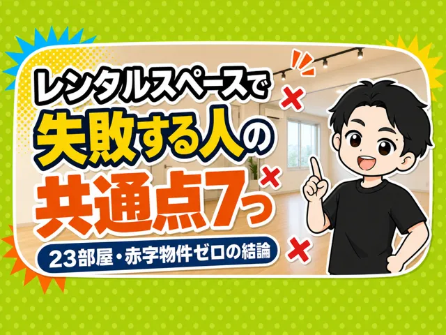
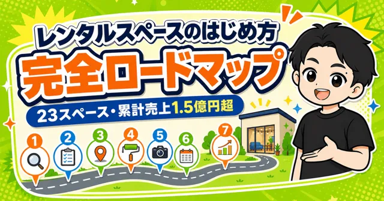
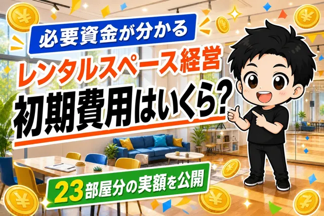
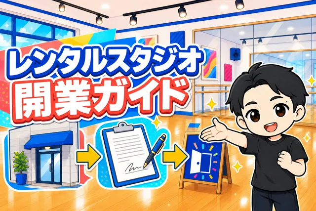
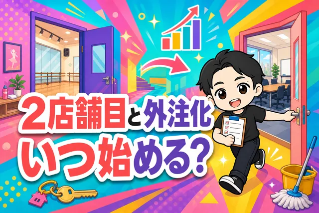
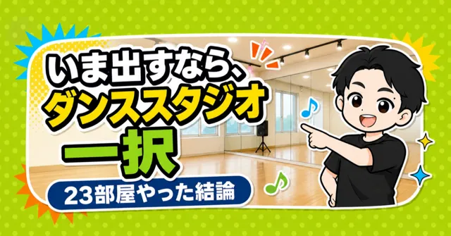
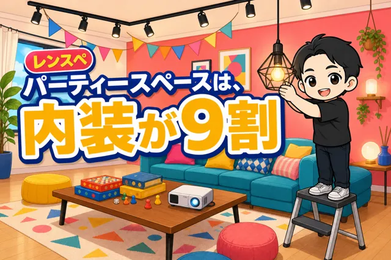
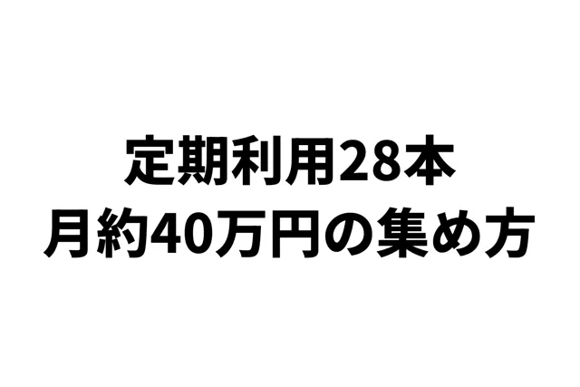
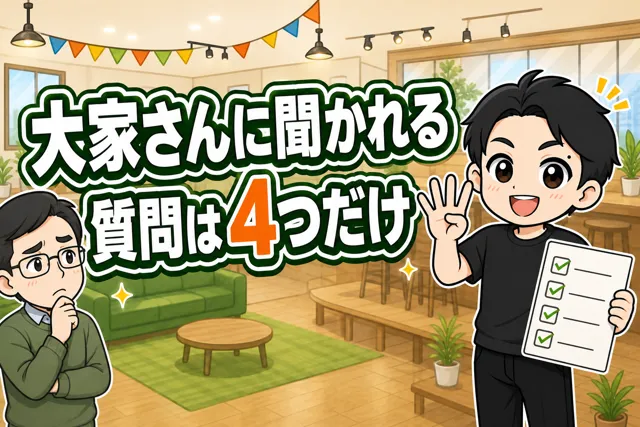

ぼくは5年で、レンタルスペースを23店舗出しました。
売上は累計1.5億円超。6店舗を撤退しましたが、赤字で終わった物件はゼロです。
このページは「レンタルスペースの経営って、実際どうなの?」を、数字を隠さずにまとめた入口です。副業で1部屋目を考えている人と、2部屋目で迷っている人に向けて書いています。
レンタルスペース経営の全体像(3行で)
利益の式はシンプルです。売上(稼働率×単価)− 手数料 − 家賃 − 経費 = 手残り。
いちばん大事なのは物件。30件問い合わせて内見に進めるのは1〜2件。ここで9割が決まります。
オープン後の仕事は、顧客対応・掃除・数字の確認の3つ。どれも外注とAIに渡せるので、本業を持ったままでも回ります。
- 初期費用: 1店舗 27万〜214万円(23店舗の実額)
- 回収期間: 7〜13ヶ月の部屋が多い(早い店で7ヶ月・9号店は13ヶ月ほか)
- 月の手残り: 店舗ごとの平均で1万〜17万円と幅がある(開業直後の店は赤字の月もある)。差がつくのはジャンルと物件
テーマ別の入口
儲からない?(23店舗の実数)
「儲からない」は本当か。23店舗の利益と撤退6店舗の実数で答えます。
レンタルスペースは儲からない?23店舗・赤字ゼロの私が答えます
レンタルスペースは本当に儲からないのか。23店舗・累計売上1.5億円超・赤字物件ゼロの運営実績から、利益の実数と失敗する出し方を解説します。
家賃10万円のレンタルスペース、月いくら残るの?
家賃10万円のレンタルスペースは月いくら残るのか。売上35万円のモデルケースと23店舗の実測から、手数料・家賃・経費・手残りを解説します。

レンタルスペースで失敗する人の共通点7つ
レンタルスペースで失敗する人には、共通点があります。 私は5年間で23店舗を出して、売上は累計1.5億円を超えました。 …
開業ガイド
物件探しから開業までの手順と、初期費用27万〜214万円の実額。

【レンタルスペースのはじめ方】 23店舗・売上1.5億円超のノウハウを公開
レンタルスペースを5年やっています。 累計23店舗(いま運営中は17店舗)。 …

【必要資金が分かる】レンタルスペース経営 初期費用はいくら？23店舗分の実額を公開
レンタルスペースの初期費用を23店舗分の実額で公開。契約関連の内訳、敷引きの罠、消費税の境目、鏡の実額、回収期間の出し方まで。無料の初期費用…

レンタルスタジオの開業手順。ダンススタジオ11店舗のぼくが解説します
ダンススタジオ11店舗を運営するきくりんが、レンタルスタジオの種類、開業5ステップ、物件・契約・内装・資金・収益の考え方を実体験から解説しま…
投資として見る
回収7〜13ヶ月の実例。2店舗目をいつ出すか、投資として見た判断。

【レンタルスペース】2店舗目以降のはなし
レンタルスペースの2店舗目を出す判断と、清掃・顧客対応を外注化するタイミングを、1店舗目から4ヶ月で2店舗目へ進んだ実例で解説します。
ビルの取り壊しで、月利100万円の月もあった5店舗を失った話
都市再開発によるビル取り壊しで、いちばんよかった月は利益約100万円だったレンタルスペース5店舗を撤退した実録。定期借家契約、管理会社との交…
フランチャイズ比較
150〜300万円のフランチャイズ費用は、独学なら1〜3部屋ぶん。数字で比較。
レンタルスペースのフランチャイズ、必要ですか?
レンタルスペースのフランチャイズは必要か。料金、出店数、回収期間、物件探しを、独学で5年・23店舗を出した経験から比較します。
業態別の入口
ダンス・貸会議室・撮影・パーティー。自社4業態の実録から選び方と内装。

いま私がレンタルスペースを出すなら、間違いなくダンススタジオです
私は5年で、レンタルスペースを23店舗出してきました。 ダンススタジオ、撮影スタジオ、パーティスペー…

パーティースペースは、内装が9割
パーティースペースは内装が9割。5年で23店舗を出した現役オーナーが、壁・床・照明・原状回復・備品・コンセプト設計を実体験から解説します。
撮影スタジオの主役は「壁」
撮影スタジオの主役は壁。撮影スタジオ4店舗を運営するきくりんが、2面の背景、床、シャンデリア、家具、撮影備品を実体験から解説します。
ダンスのレンタルスタジオ →
レンスペの中でもダンスのレンタルスタジオ。11店舗の実録を、読む順番にまとめました。
レンスペをやるなら、ダンススタジオを住宅地の駅に
レンタルスペースをやるなら、ダンススタジオを住宅地の駅に。累計23店舗のなかでいちばん多いダンススタジオ11店舗の平均で、月の利益は14.6…
防音工事なしで、ダンスのレンタルスタジオを出す条件
レンタルスペースでダンススタジオを始めるとき、防音工事に数百万円かける前に。ぼくは防音工事をしません。構造・階・下の階・広さと形・天井の高さ…

レンスペの定期利用28本、月約40万円の集め方
レンタルスペースの中でも、ダンスのレンタルスタジオの集客は、教室の先生の定期利用が土台です。いま5店舗で定期利用28本、定期だけで月約40万…
大家・契約
大家さんに聞かれる質問、転貸の話、契約まわり。

レンタルスペースの物件問い合わせで、聞かれる質問は4つだけ
レンタルスペースの物件問い合わせで大家さんに聞かれるのは、又貸し・無人運営・利用者の出入り・騒音の4つ。23店舗を契約してきた現役オーナーが…
全記事一覧(96本・新しい順)
儲からない?(23店舗の実数)(14本)
- ぼくのレンスペ紹介 1号店：家賃10万・月利15万
- ぼくのレンスペ紹介 3号店：家賃16万・月利26万・撤退
- ぼくのレンスペ紹介 9号店：家賃20万・月利24万
- 入居した初日に、退去しました
- 月利26万のレンスペ、クレームで閉店しました
- レンタルスペースは儲からない？23店舗出した答え
- 37歳のおっさんが、レンタルスペースをやってみた結果
- レンタルスペース経営で失敗しました
- 家賃10万円のレンタルスペース、月いくら残るの?
- ビルの取り壊しで、月利100万円の月もあった5店舗を失った話
- レンタルスペースは儲からない?23店舗・赤字ゼロの私が答えます
- レンタルスペースで失敗する人の共通点7つ
- 【やってはいけない】レンタルスペース運営
- レンタルスペースの収益を公開（月10万円）
開業ガイド(24本)
- 40歳オッサン at homeの問い合わせで脱サラできた
- レンタルスペース はじめる前に怖かった8つのこと
- 【まずこの3つ】レンタルスペースの始め方
- 【有料級】レンタルスペースのはじめ方（5年 23店舗の極意）
- 【レンスペ】AIで物件さがしをしてみた結果
- レンタルスタジオの開業手順。ダンススタジオ11店舗のぼくが解説します
- はじめてレンタルスペースを出したい人に伝えたい5つのこと
- 【レンタルスペース】内見で見るポイント
- 【必要資金が分かる】レンタルスペース経営 初期費用はいくら？23店舗分の実額を公開
- レンタルスペース、競合視察しないで出店してるってマジ？
- 【レンタルスペースのはじめ方】 23店舗・売上1.5億円超のノウハウを公開
- レンタルスペースのはじめ方⑧ ポータルサイト登録と価格戦略
- レンタルスペースのはじめ方⑦ 入居〜設営の完全チェックリスト
- レンタルスペースのはじめ方⑥ 契約してから入居前にやるべき準備（開業チェックリスト）
- レンタルスペースのはじめ方⑤ 内装・残置の確認からフリーレント交渉の全手順
- レンタルスペースのはじめ方④ 儲かる物件探し術
- 予約が止まらない！勝てるレンタルスペースを作るための市場調査術
- レンタルスペースの始め方① 初心者でも勝てるジャンルの選び方
- 戦略次第で勝てるは嘘？レンタルスペース物件選びで妥協してはいけない理由
- 【酔った勢い】レンタルスペースを始める最強の第1歩
- 集客が変わる！物件写真の撮り方完全ガイド
- 【レンタルスペース】絶対に登録すべきポータルサイト5選
- レンタルスペース 内装業者の選び方とDIYの活用法
- まずアットホームでOK！レンタルスペースで儲かる物件を見つける全手順
経営・運営(ハブ本文)(33本)
- まだレンスペの電話対応で消耗してるの？（AI電話）
- AIに任せているレンスペの仕事、数えたら171件ありました
- AIで無くなる仕事、AIで強くなる商売
- 【保存版】レンスペのポータル、70サイト調べました
- ポータルサイトに年780万円、支払いました
- ココナラの相場は10〜30万円。公式HPはAIで作る
- 【レンスペ経営】防犯カメラ 運用マニュアル
- レンタルスペースでレビューをもらう3つの方法
- レンスペ経営をスマホゲームにしてみた結果
- 【解説】レンタルスペースの保険について
- AIと相性がいい副業ほど、あとで苦しくなる
- AIにできない副業を、AIで回す
- 【レンタルスペース】ポータルサイトは、ぜんぶに載せなさい
- まだAI副業やってるの？
- 【フリーランス激減】AIと相性がわるいビジネスが生き残る
- レンタルスペースのトラブル対応、よくある5つを全部書きます
- レンタルスペース経営、オープン後の仕事は3つだけ
- レンタルスペースの弱点は「頑張っても売上が伸びない」こと。だから私は○○をしました。
- 副業でレンタルスペースをやるべき5つの理由
- AIと相性が良いとはいえないレンタルスペースを、私がやる理由
- 掃除の外注さんが掃除をせずに3分で帰る問題を、AIに作らせたアプリで解決しました
- 【働いてはいけません】副業は働かないから稼げる
- 現金派のお客さんを取り込む！「現地払い」の導入方法
- レンタルスペース掲載直後「絶対やらないと損する3点」
- レンタルスペース運営で成功する3つの鉄則！「真似」と「調査」と「真心」
- 【実録】レンタルスペース掃除の外注化のやり方
- 安定経営の鍵！ダンススタジオの定期利用を増やす5つの戦略
- 【完全ガイド】レンタルスペースの集客方法
- 【手数料30%を削減】レンタルスペースの公式HP作成方法
- レンタルスペースの集客方法 完全ガイド
- 私が脱サラできた方法
- 【Google検索数が月40回】「誰も調べない副業」が美味しい
- 私が脱サラに成功した方法（再現性あり）
フランチャイズ比較(1本)
業態別の入口(13本)
- レンスペの明と暗。ダンスは3倍、撮影は横ばい。
- これからレンスペを始めるなら、この2択です
- 撮影スタジオの主役は「壁」
- パーティースペースは、内装が9割
- 【レンスペ】ダンススタジオ出店の買い物、ぜんぶ書きます
- ダンススタジオの物件、私は毎日この手順で探しています
- 【注意】出してはいけないレンタルスペース2つ
- いま私がレンタルスペースを出すなら、間違いなくダンススタジオです
- 【実録】月10万稼ぐ！20㎡未満の「小箱」パーティースペース戦略
- 【推し活専用】撮影スタジオの物件選び・3つの鉄則
- 【物件選びサポート付き】物件の具体的な選び方（ダンスレンタルスタジオ）
- 収益1億超えのプロがいま出店したい！レンタルスペースの4ジャンル
- ダンススタジオの内装、設備・備品
ダンスのレンタルスタジオ(7本)
大家・契約(1本)
よくある質問
レンタルスペースは儲からないって本当ですか?
店舗によります。23店舗の月の手残りは店舗ごとに1万〜17万円と幅があり、ならすと1店舗10万円前後。赤字で終わった物件はゼロですが、「なんとなく出す」と稼働が上がらず苦しくなります。実数は儲からない?の記事にまとめています。
初期費用はいくらかかりますか?
ぼくの23店舗では27万〜214万円でした。家賃・敷金礼金・内装・備品で決まります。内訳は初期費用の記事に店舗ごとの実額があります。
副業でもできますか?
できます。オープン後の仕事は顧客対応・掃除・数字の確認の3つだけで、掃除は外注、確認はAIに任せられます。ぼく自身、会社員のうちに1店舗目を出して、積み上げてから脱サラしました。
フランチャイズは必要ですか?
ぼくは使いませんでした。150〜300万円のフランチャイズ費用は、独学なら1〜3部屋ぶんの初期費用です。同じお金をどこに使うかの話なので、比較の記事で数字を見てから決めてください。
経営でいちばん大事なことは何ですか?
物件です。30件問い合わせて内見に進めるのは1〜2件。ここで妥協しないことが、その後の稼働率をほぼ決めます。探し方は物件探しの記事へ。